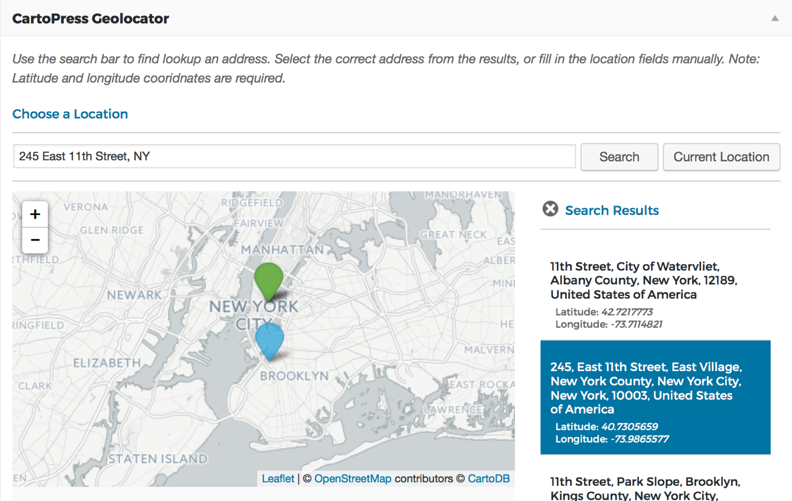

Requires WordPress 4.3+
CartoPress is a plugin for WordPress that links CartoDB, an open-source and API-driven web-mapping platform, to the world’s most popular content management system.
While there are multitudes of other plugins providing mapping support, most are exclusively Google Maps-based instead of based on open-source solutions such as Leaflet; few are focused on geo-referencing your WordPress content; and CartoPress is the first to specifically target CartoDB.
CartoPress was built to provide the ability to turn your WordPress-based site into a geo-CMS using the CartoDB platform, allowing you to design dynamic interactive maps and geo-spatial appliations from your existing WordPress data. While CartoPress allows you to add robust geolocation to your WordPress posts, pages and media, CartoDB brings infinite possibilites of mapping and visualization. CartoPress makes use of CartoDB’s powerful APIs to act as a bridge, enabling you to easily import your WordPress data directly into your CartoDB account. Add or update points on your map simply by adding or updating a post!